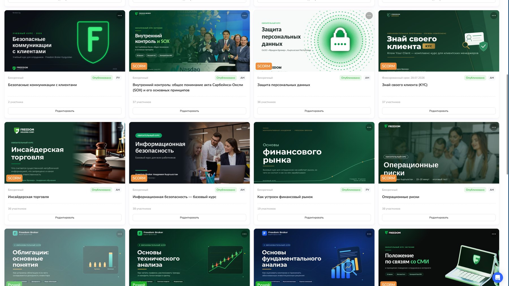
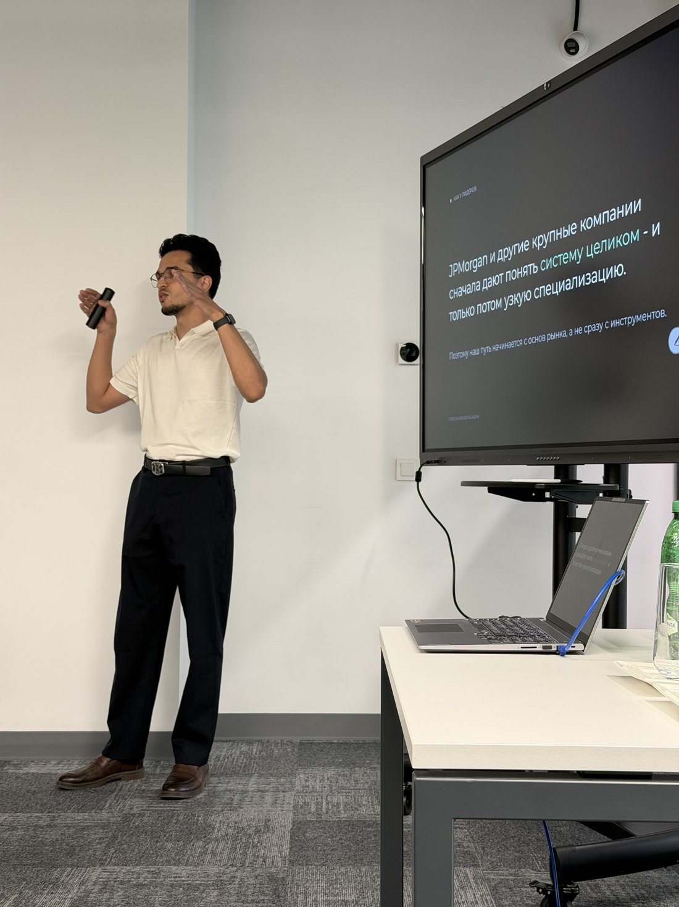
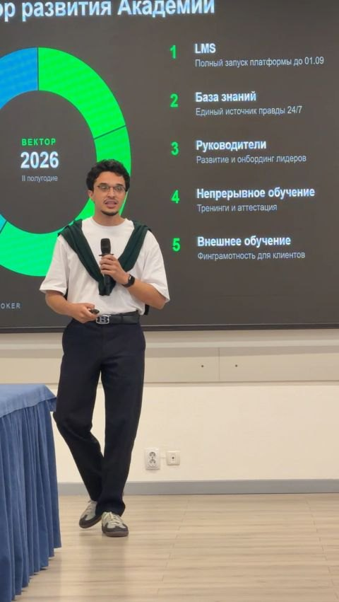
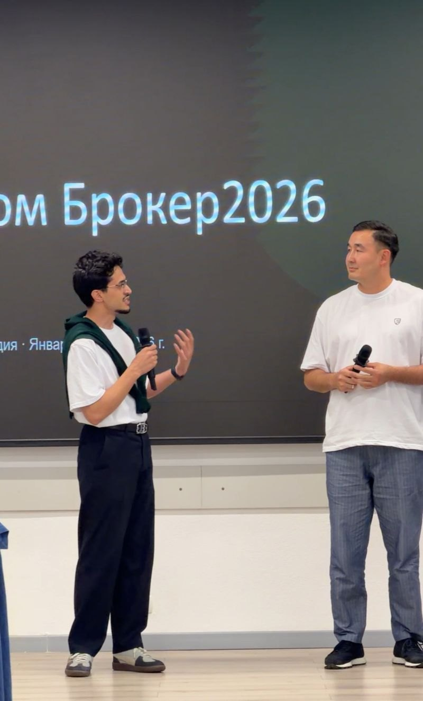
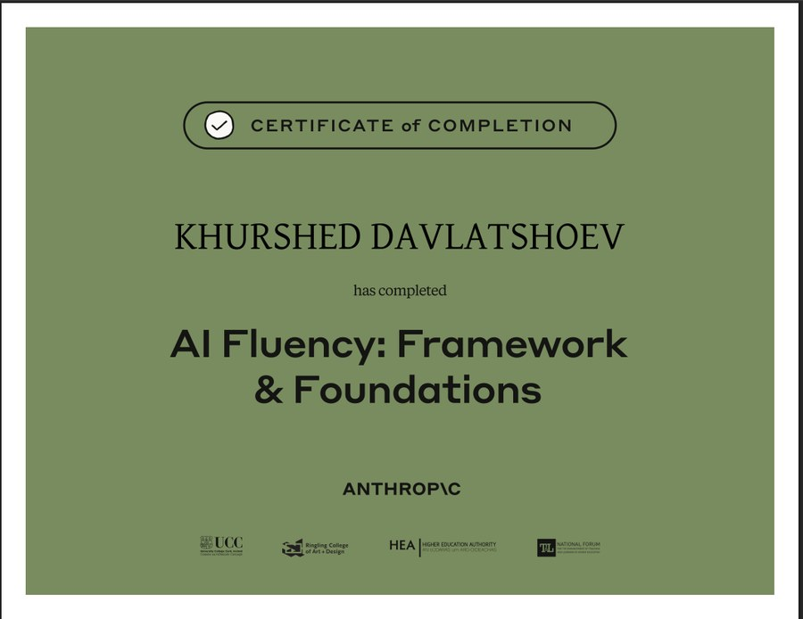
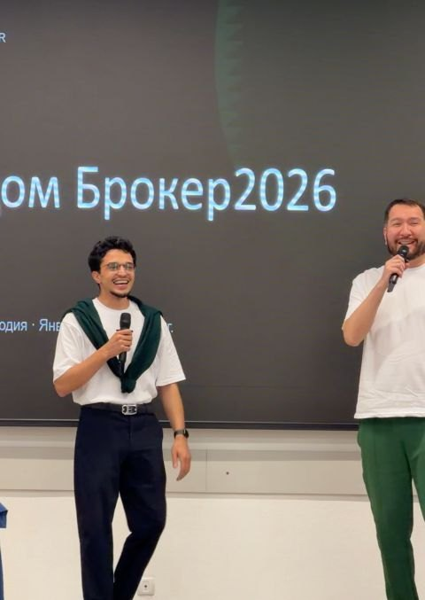

In regulated companies, where getting it wrong costs the licence.
Sales enablementCompliance learningBuilding the function
Head of Academy · Freedom Broker Kyrgyzstan
Part of Freedom Holding Corp. (NASDAQ: FRHC)
Open to relocation to Europe
§ 1.0Context
The starting position
There was nothing to start from.
Freedom Broker Kyrgyzstan is a licensed broker inside Freedom Holding Corp., running brokerage, dealer, trust management and virtual-asset exchange services.
When I joined as Head of Academy there was no learning function. No platform. No course library. No onboarding path. No record of who had been trained on what. Compliance training was a regulatory obligation with nothing behind it.
Platform selected and implemented. Course library built. A company-wide compliance programme run end to end. A five-week onboarding path with named owners for every line. The function went from nonexistent to operating.
§ 2.0Live 2026Case one
Building the function
I chose the LMS. Then I wrote the rules for it.
Buying a platform is the easy half. A learning function without a governing document is a service desk that takes requests and has no standing to refuse one.
I ran the selection and the rollout end to end and landed on Evolve, an AI-native LMS with SCORM support, native authoring and an assessment centre. The whole course library was then built on it from nothing.
01Requirements and gap analysis
02Vendor evaluation
03Procurement case
04Configuration and SCORM integration
05Rollout, enrolment and tracking

The library built on it · 12+ courses in Russian and English, SCORM and native, with enrolment, deadlines and scoring thresholds set per course
The governing document
Thirteen chapters: structure, functions, attestation procedure, KPI and reporting. It defines who the Academy answers to and what it is measured on. Without that, training is a favour the business asks for.
The procurement case
How a request becomes a course. Or does not.
Most requests that reach L&D are not training problems. Running every one through the same four questions is what stops the function turning into an order desk, and it is what makes a refusal defensible when a department head pushes back.
The framework behind every course in the library. Test 2 is the one that matters here: anything citing our own regulation is built in-house, because a vendor cannot keep pace with a rulebook they do not read.
§ 3.011 of 11 closedCase two
Compliance in a regulated broker
Eleven obligations. A defensible record for each.
The usual approach is to release everything at once and chase people until the deadline. I sequenced instead: two to three working days per course, weekends excluded, a fixed close date for each, spread across twenty-five working days.
Staggering removes the collision between training and the working day. Non-completion shows up on day three rather than at the deadline. And compliance gets a record of when each obligation was met, course by course, that holds up when someone asks for it.
Inside one of them: thirty-seven screens on a US accounting law.
A mandatory SOX course for every employee of a NASDAQ-listed broker. The hard part is not the law. It is making a compliance obligation feel like something that has to do with the person reading it. Designed and produced in-house.
The rules, up front
Who it is for, the pass mark, how many attempts. Nobody should meet the assessment rules for the first time at the test.
Contents and outcomes on one screen
Eight blocks on the left, what you will be able to do afterwards on the right. Written as capabilities, not topics.
Three framings, side by side
What this is, why the company needs it, why it matters to you. Compliance training fails when it never answers the third one.
Practice checks that do not count
Retrieval between blocks, explicitly ungraded. Scoring everything teaches people to guess safely rather than think.
§ 4.0April 2026Case three
Sales enablement
Twenty-five days. Six checkpoints.
From first morning to working the line unsupervised. Fifty-one items, every one with an owner. Nothing in the programme says "read this" - each line specifies what the person must be able to do, who checks it, and on which day.
Week 1
Contracts, access, the holding and the local entity, regulation, role KPI, code of ethics
Accounts, trust management, tariffs, platform navigation, order types, demo portfolios
Test 2 · 80%
Week 4
Tone of voice, call structure, five scripts, objections, cross-sell, prohibited phrases
Test 3 · 85%
Week 5
Risk disclaimer, client verification, anti-fraud, IT security, group compliance, IDP
Role-play · sign-off
Six checkpoints instead of one exam. The thresholds rise because the cost of a mistake rises: an 80% on market fundamentals is a knowledge gap, an 85% before live calls is a client-facing risk.
Rising thresholds
Six checkpoints instead of one exam at the end. 80% on day ten, 80% on day fifteen, 85% on day twenty, then a three-scenario role-play, a mentor sign-off on supervised live calls, and a final joint approval.
Seven owners
Employee, mentor, department head, L&D, Compliance, IT and HR each have defined responsibilities in the document. A programme that only L&D owns is one that quietly stops running the moment L&D is busy.
§ 5.0Strategy
Owning the portfolio
Five directions. One owner each.
A learning function without a portfolio view becomes whatever landed in the inbox last week. I presented the Academy's direction for the second half of 2026 to the whole company, split into five lines, each with its own owner, its own success condition and its own reporting line.
01
Platform
Full LMS launch, with enrolment, thresholds and tracking.
Live
02
Knowledge base
One source of truth, available without asking anyone.
In build
03
Leaders
Development and onboarding for people who manage people.
In build
04
Continuous learning
Training and attestation on a repeating cycle, not a campaign.
Running
05
External learning
Financial literacy for clients, delivered by the Academy.
Piloting
Presenting this was the point at which the Academy stopped being a project and became a function with a mandate. The five lines are also how I say no: a request that does not sit inside one of them needs an argument for why the portfolio should change.



Company-wide sessions · Freedom Broker Kyrgyzstan · 2026
§ 6.0Method
How the material gets made
Built in-house, in days.
Every SCORM package on the platform was produced in-house with AI tooling and Figma. Not bought, not briefed out to a vendor. Turnaround on a new mandatory course went from a procurement cycle to a production task.
The model does the volume work: first-draft structure, scenario variants, distractors for assessment items, and translation between Russian and English. What it does not touch is anything load-bearing. Regulatory content is written from our own internal policies and checked against them line by line. Pass thresholds, attempt limits and what counts as a fail are set by me and by Compliance, never suggested by a model. The final read for tone is human, because a course that sounds generated is a course people click through.
The gain is speed, not cost. A new mandatory course is now a production task measured in days rather than a procurement cycle measured in months.

AI Fluency: Framework & Foundations
Anthropic, with University College Cork, Ringling College of Art + Design, the Higher Education Authority and the National Forum. Completed 2026.
§ 7.0Prior roles
Earlier results
Numbers that held up.
10%
Leadership turnover, down from 60%, through a culture and leadership programme.
MyStory · 2023-2025 · 9 team leads
-25%
Onboarding time, three months to 2.2, with quality metrics held.
SimBank · 2025 · digital mobile bank
+35%
Employee engagement, alongside a 15% cut in operational costs.
MyStory · 2023-2025 · 9 team leads
4.8
Average rating out of five, across 30+ sessions delivered.
SimBank · 2025 · digital mobile bank
Nothing from Freedom Broker here yet.
The programmes launched in 2026 and the first impact measurement is not in. Completion rates are not impact, and I would rather show nothing than show those.
§ 8.0Principles
How I work
Four things I hold to.
I start from the business signal
A department head asking for "a sales training" is describing a symptom.
I write down who owns what
Most learning programmes decay because responsibility sits with one function.
I build rather than brief
It keeps the feedback loop short and the material accurate to our own regulation.
Completion rates are not impact
One number that holds up beats a dashboard that does not.
§ 9.0Prior role
Bank Bai-Tushum · Head of Quality Control and Training
Before the broker: quality on the front line.
The same work, one industry earlier, and closer to the customer. I owned training and quality control for frontline staff at a Kyrgyz bank: a 30-60-90 day onboarding model, multi-level sales and service programmes tied to performance metrics, and the standards those programmes were measured against.
Standards, not slogans
Client interaction standards, consultation quality monitoring, and transparent evaluation criteria for frontline staff - written down, so a score meant the same thing in two different branches.
Training inside product launches
On new retail and corporate products I ran the full cycle: identifying the need, designing the programme, preparing the staff, setting quality standards, and feeding results back to department heads.
This is where the habit came from. A sales programme that is not tied to a measured standard is a workshop, and a workshop is not enablement.
§ 10.0Prior role
Mystory, AI EdTech · Lead project manager and L&D
Nine team leads. One system for growing them.
A fast-growing startup was losing the people it had just promoted. Leadership turnover sat at sixty percent - not because the leads were weak, but because nobody had defined what the job was, and the company had no way to develop someone into it.
I hired and onboarded nine team leads and built the culture and leadership development programme around them: what a lead is accountable for, how they are supported in the first ninety days, and what growth looks like after that. Scrum was introduced in three teams alongside it, which cut delivery time by roughly a third.
What moved
Leadership turnover fell from 60% to 10%. Engagement rose 35% and operating costs fell 15% over the same period. The base is small - nine leads - so the honest reading is that roughly five departures a year became one.
Why it held
The programme was not a training. It was a definition of the role, an onboarding path into it, and a manager above each lead who was accountable for their first ninety days. Remove any one of the three and the number goes back.
The team won Best AI Startup at Astana Hub Battle 2023, Digital Bridge forum.
§ 11.0Open
About
Who is writing this.

Russian and Persian native · English C1 Four years building learning functions · brokerage, banking, EdTech, FMCG
A reference from that role
Khurshed "builds training, recruitment, and development processes from scratch" and turns them into mature systems that support organisational strategy. The letter also notes his work designing a 30-60-90 day onboarding model, sales and service programmes tied to performance metrics, and quality monitoring for client-facing staff.
Vasip D. Ramazanov · Deputy Chairman of the Board · OJSC Bank "Bai-Tushum" · March 2026
Signed letter available on request.
§ 12.0Open to offers
Let's talk.
Open to L&D lead and sales enablement roles in Europe.